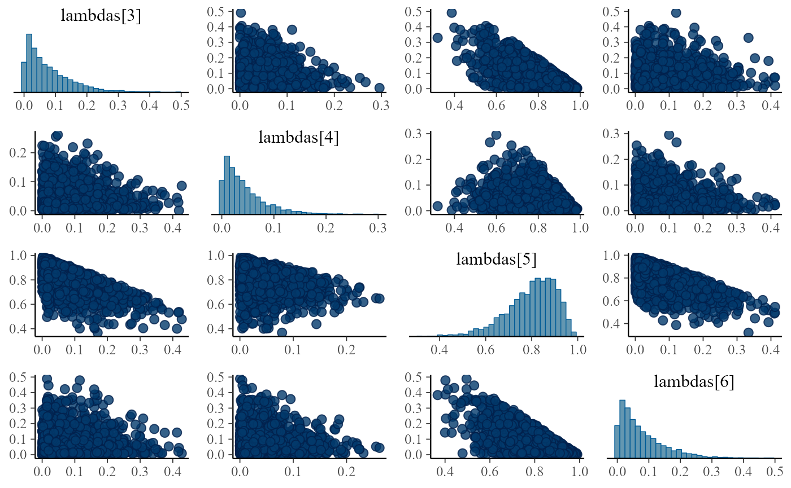
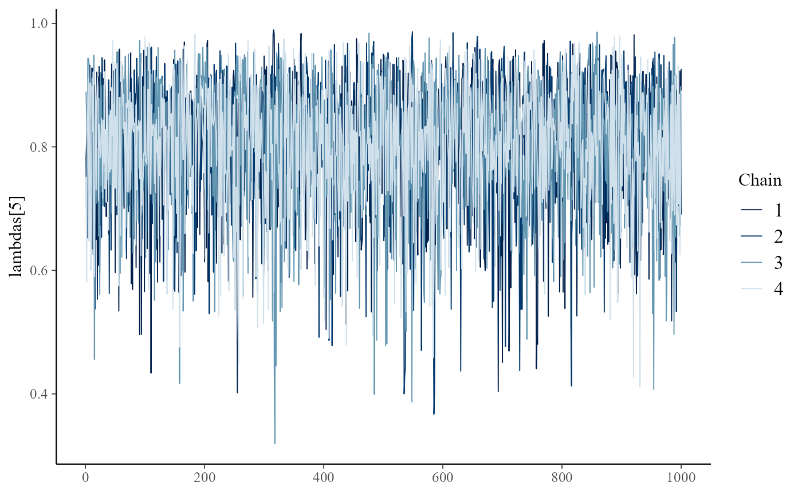

if(!requireNamespace("fabricatr", quietly = TRUE)) {
install.packages("fabricatr")
}
library(CausalQueries)
library(fabricatr)
library(knitr)
library(ggplot2)Accessing the posterior
When you update a model using CausalQueries,
CausalQueries generates and updates a stan
model and saves the posterior distribution over parameters in teh
model.
The basic usage is:
data <- data.frame(X = rep(c(0:1), 10), Y = rep(c(0:1), 10))
model <- make_model("X -> Y") |>
update_model(data, refresh = 0)The posterior over parameters can be accessed thus:
grab(model, "posterior_distribution")
#> Summary statistics of model parameter posterior distributions:
#> Draws: 4000
#> rows are parameters
#> mean sd
#> X.0 0.50 0.10
#> X.1 0.50 0.10
#> Y.00 0.08 0.07
#> Y.10 0.04 0.04
#> Y.01 0.80 0.11
#> Y.11 0.08 0.07Summary of stan performance
You can access a summary of the parameter values and convergence
information as produced by stan thus:
grab(model, "stan_fit_summary")
#> Inference for Stan model: simplexes.
#> 4 chains, each with iter=2000; warmup=1000; thin=1;
#> post-warmup draws per chain=1000, total post-warmup draws=4000.
#>
#> mean se_mean sd 2.5% 25% 50% 75% 97.5% n_eff Rhat
#> X.0 0.50 0.00 0.10 0.30 0.42 0.49 0.57 0.69 2342 1
#> X.1 0.50 0.00 0.10 0.31 0.43 0.51 0.58 0.70 2342 1
#> Y.00 0.08 0.00 0.07 0.00 0.02 0.06 0.11 0.26 1942 1
#> Y.10 0.04 0.00 0.04 0.00 0.01 0.03 0.06 0.15 3868 1
#> Y.01 0.80 0.00 0.11 0.54 0.74 0.82 0.88 0.96 3813 1
#> Y.11 0.08 0.00 0.07 0.00 0.02 0.06 0.12 0.28 4189 1
#> X0.Y00 0.04 0.00 0.04 0.00 0.01 0.03 0.05 0.14 2033 1
#> X1.Y00 0.04 0.00 0.04 0.00 0.01 0.03 0.06 0.14 1922 1
#> X0.Y10 0.02 0.00 0.02 0.00 0.01 0.01 0.03 0.08 3722 1
#> X1.Y10 0.02 0.00 0.02 0.00 0.01 0.01 0.03 0.08 3816 1
#> X0.Y01 0.40 0.00 0.10 0.21 0.33 0.39 0.46 0.60 2648 1
#> X1.Y01 0.40 0.00 0.10 0.21 0.33 0.40 0.47 0.60 2755 1
#> X0.Y11 0.04 0.00 0.04 0.00 0.01 0.03 0.06 0.14 3893 1
#> X1.Y11 0.04 0.00 0.04 0.00 0.01 0.03 0.06 0.14 4019 1
#> lp__ -14.64 0.04 1.52 -18.41 -15.47 -14.31 -13.50 -12.64 1601 1
#>
#> Samples were drawn using NUTS(diag_e) at Sun Mar 24 10:07:00 2024.
#> For each parameter, n_eff is a crude measure of effective sample size,
#> and Rhat is the potential scale reduction factor on split chains (at
#> convergence, Rhat=1).This summary provides information on the distribution of parameters
as well as convergence diagnostics, summarized in the Rhat
column.
See stan documentation for details.
Advanced diagnostics
If you are interested in advanced diagnostics of performance you can
save and access the raw stan output.
model <- make_model("X -> Y") |>
update_model(data, refresh = 0, keep_fit = TRUE)Note that the summary for this raw output shows the labels used in
the generic stan model: lambda for the vector
of parameters, corresponding to the parameters in the parameters
dataframe (grab(model, "parameters_df")), and , if saved, a
vector types for the causal types (see
grab(model, "causal_types")) and w for the
event probabilities
(grab(model, "event_probabilities")).
model |> grab("stan_fit")
#> Inference for Stan model: simplexes.
#> 4 chains, each with iter=2000; warmup=1000; thin=1;
#> post-warmup draws per chain=1000, total post-warmup draws=4000.
#>
#> mean se_mean sd 2.5% 25% 50% 75% 97.5% n_eff Rhat
#> lambdas[1] 0.50 0.00 0.10 0.28 0.42 0.50 0.57 0.70 2208 1
#> lambdas[2] 0.50 0.00 0.10 0.30 0.43 0.50 0.58 0.72 2208 1
#> lambdas[3] 0.08 0.00 0.07 0.00 0.02 0.06 0.11 0.27 2308 1
#> lambdas[4] 0.04 0.00 0.04 0.00 0.01 0.03 0.06 0.15 4216 1
#> lambdas[5] 0.80 0.00 0.11 0.56 0.74 0.82 0.88 0.95 4177 1
#> lambdas[6] 0.08 0.00 0.07 0.00 0.02 0.06 0.11 0.26 4308 1
#> types[1] 0.04 0.00 0.04 0.00 0.01 0.03 0.05 0.14 2325 1
#> types[2] 0.04 0.00 0.04 0.00 0.01 0.03 0.06 0.14 2287 1
#> types[3] 0.02 0.00 0.02 0.00 0.01 0.02 0.03 0.07 3922 1
#> types[4] 0.02 0.00 0.02 0.00 0.01 0.02 0.03 0.08 4113 1
#> types[5] 0.40 0.00 0.10 0.21 0.32 0.39 0.46 0.60 2508 1
#> types[6] 0.40 0.00 0.10 0.22 0.33 0.40 0.47 0.61 2645 1
#> types[7] 0.04 0.00 0.04 0.00 0.01 0.03 0.05 0.14 4204 1
#> types[8] 0.04 0.00 0.04 0.00 0.01 0.03 0.06 0.14 3971 1
#> lp__ -14.62 0.04 1.52 -18.35 -15.43 -14.29 -13.49 -12.64 1429 1
#>
#> Samples were drawn using NUTS(diag_e) at Sun Mar 24 10:07:03 2024.
#> For each parameter, n_eff is a crude measure of effective sample size,
#> and Rhat is the potential scale reduction factor on split chains (at
#> convergence, Rhat=1).You can then use diagnostic packages such as
bayesplot.
model |> grab("stan_fit") |>
bayesplot::mcmc_pairs(pars = c("lambdas[3]", "lambdas[4]", "lambdas[5]", "lambdas[6]"))
np <- model |> grab("stan_fit") |> bayesplot::nuts_params()
head(np) |> kable()| Chain | Iteration | Parameter | Value |
|---|---|---|---|
| 1 | 1 | accept_stat__ | 0.9989952 |
| 1 | 2 | accept_stat__ | 0.9736192 |
| 1 | 3 | accept_stat__ | 0.9765536 |
| 1 | 4 | accept_stat__ | 0.8101124 |
| 1 | 5 | accept_stat__ | 0.9960061 |
| 1 | 6 | accept_stat__ | 0.9801802 |
model |> grab("stan_fit") |>
bayesplot::mcmc_trace(pars = "lambdas[5]", np = np)
#> No divergences to plot.